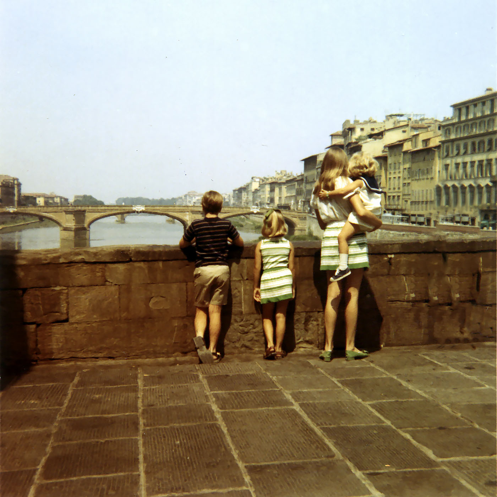
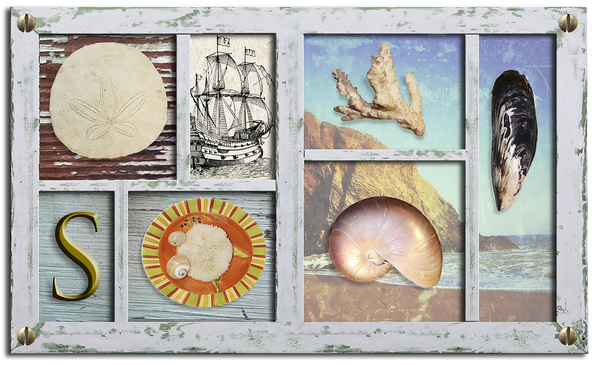
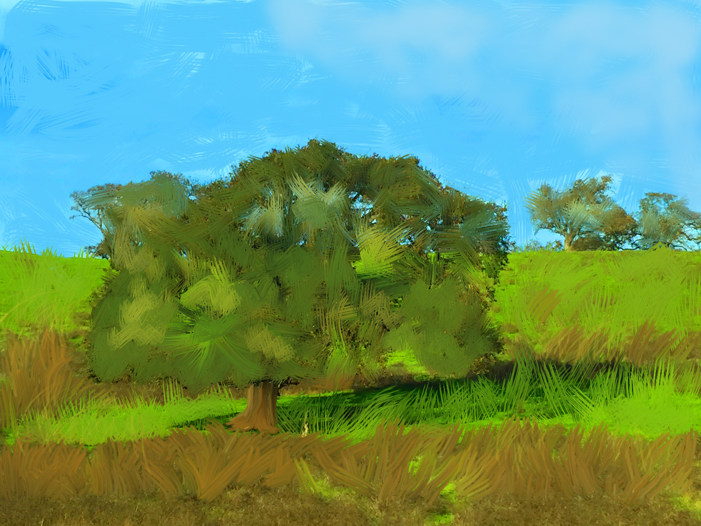
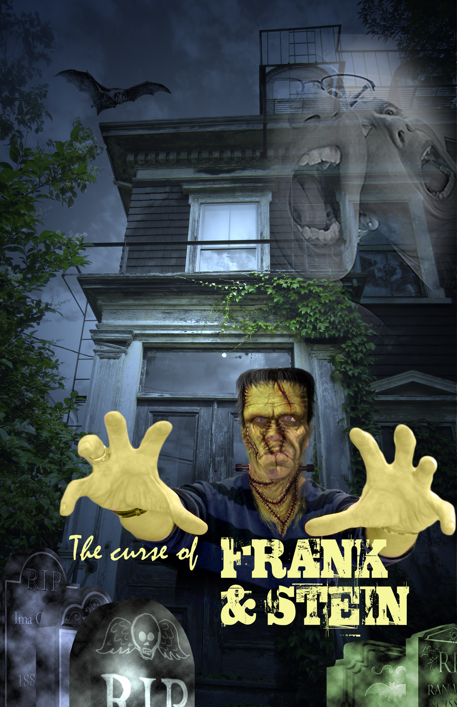
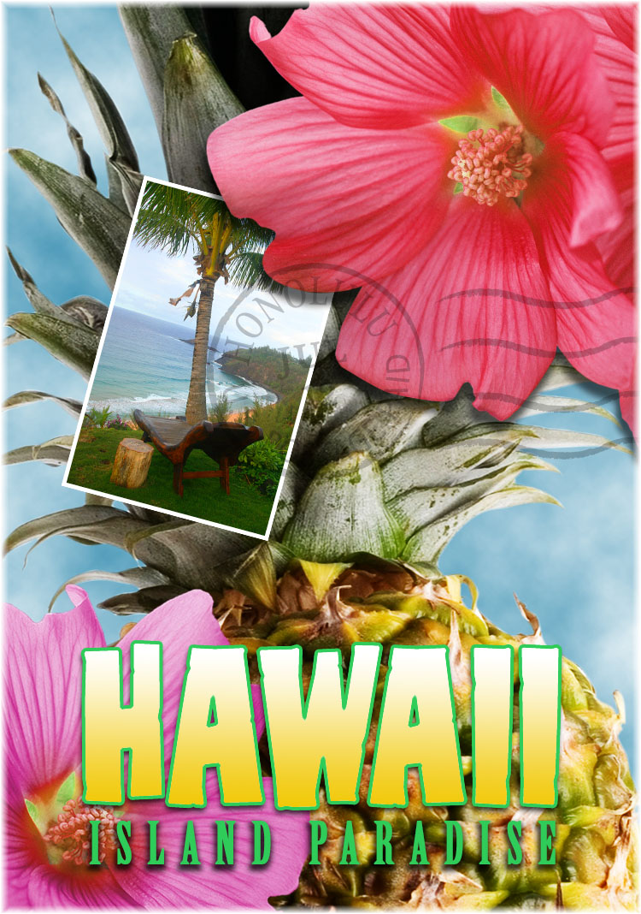

About
Front-end Web developer specilizing in HTML5, CSS3, and JavaScript programming languages.
Adobe Certified Professional in Visual Design: Photoshop, Illustrator, and XD.
Certified Microsoft Office Specialist Associate, with certifications in Microsoft Word, Excel, and Power Point
Front-End Development Projects
Adobe Photshop Projects
-

Vintage Photo Restoration
Basic photo corrections using Adobe Photoshop processes of acquiring, resizing, and retouching a vintage photograph.
-

Shadowbox Collage
Composition of a shadowbox collage using selections in Adobe Photoshop to adjust position, add to or subtract from selections, rotate items, and constrain the movement of items.
-

Magazine Cover Layout
Compose a magazine cover layout using typography, layers, and vector-based shapes in Adobe Photoshop.
-

Digital Painting
Convert a photograph into a digital painting using Adobe Photoshop brushes and color-mixing abilities.
-

Monster Movie Poster
Transform traditional photos into monster movie poster with advanced composition, Smart Filters, and transform techniques.
-

Travel Postcard
Compose a travel postcard using Adobe Photoshop layers. Layer masks and Smart Objects are used for non-destructive editing.
Adobe Illustrator Projects
-

Brand & Logo Design
Create a personal brand logo that is original, distinct, and uses graphic design principles.
-

Business Card Design
Use personal brand and logo to design a busniess card.
-

Travel Poster
Create a "Happy Camper" poster by editing basic shapes, paths, and strokes.
-

Promotional Postcard
Create a farm stand promotional postcard using a series of shapes and colors. Copy, manipulate, and alter shapes to produce still-life illustration.
-

Wildlife Poster
Create a wildlife poster using selection tools to locate, select, and protect objects by grouping, hiding, locking, and aligning.
-

Gradients, Blends, & Patterns
Edit and enhance a poster using grandients, blends, and patterns. Use multiple colors to blend gradients and enhance for 3D effect.